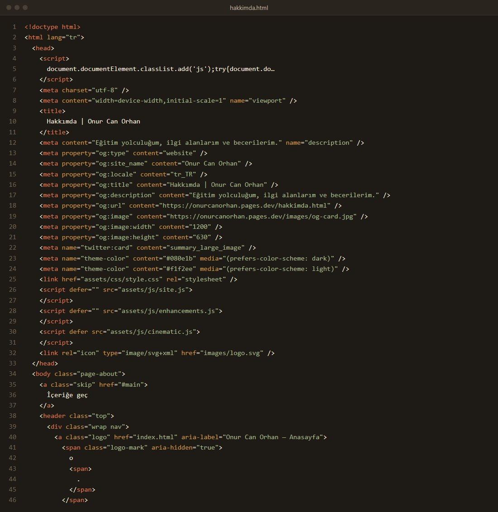

I take notes on what I learn while studying and building things. I'm not an expert; these are my own notes.

Source of this site's About page: header, main, section and footer tags.
HTML5 and Semantic Web Design
HTML5 helps define not only how a page looks but also what its content means.
Core concepts
Semantic tags such as header, nav, main, article and footer describe page regions. This makes content easier to interpret for assistive technology and search engines.
Practice and good habits
A good HTML page uses a consistent heading hierarchy. The h1 names the main topic and h2 headings separate major sections. Form labels identify fields, and image alt text describes their purpose.
Conclusion
Every page on this site is built with header, main and footer. Even with CSS turned off the page still reads like a proper document; I checked.
The same Projects page on a wide screen, a tablet and a phone.
Responsive Design with CSS3
Responsive design aims to keep websites readable and usable across screen sizes.
Core concepts
CSS Grid is helpful for multi-column cards, while Flexbox handles navigation and one-dimensional alignment. Media queries can change columns or navigation when the viewport narrows.
Practice and good habits
Flexible measures such as max-width, percentages and clamp reduce overflow. Touch targets should be large enough, and mobile text should not require horizontal scrolling.
Conclusion
On this site the project cards are two columns on wide screens and one column on phones. I did it mostly with grid and clamp rather than media queries.
Kömür's chat bubble. Answers come from a local model running on the computer.
Artificial Intelligence in Software Development
AI tools can assist with writing code, explaining concepts, debugging and generating tests.
Core concepts
Model-generated code should not be trusted without verification. Developers should review it, inspect dependencies and run automated tests.
Practice and good habits
Clear requirements improve results. Rather than requesting a mobile menu alone, developers should specify keyboard access, viewport behavior and error cases.
Conclusion
I used AI tools a lot while building this site and Kömür. But some of the suggested code didn't work; every time I had to test it and fix it. Using the tool well means knowing what you want.